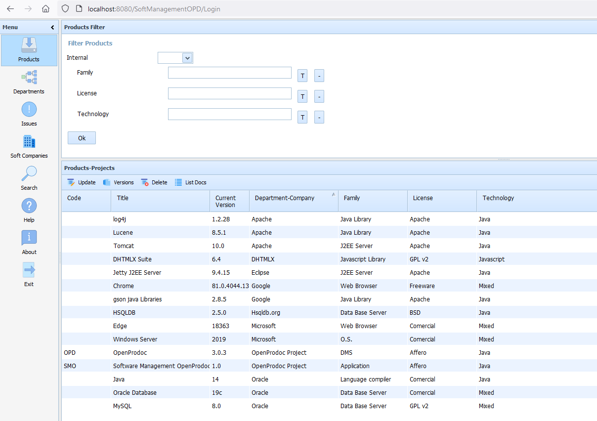
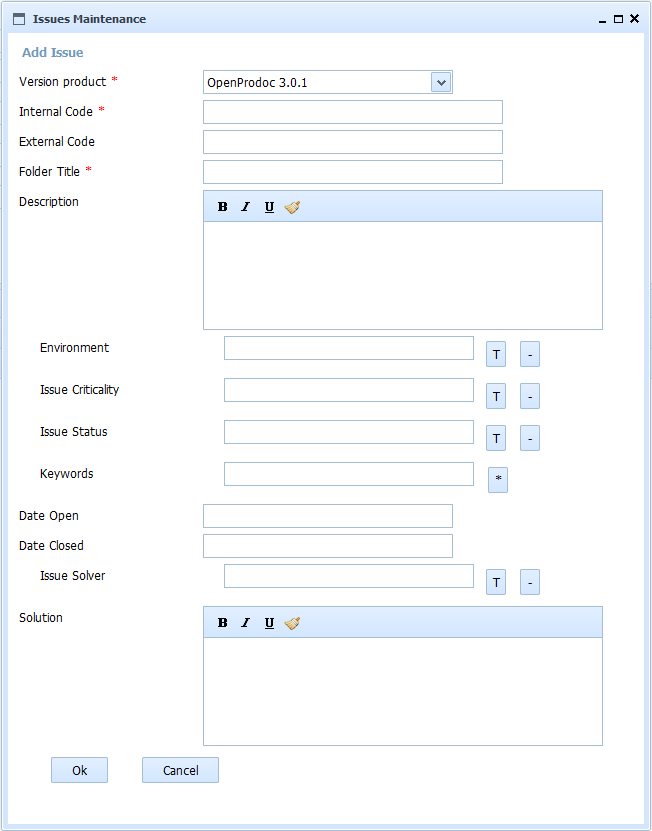

OpenProdoc
 OpenProdoc: Document Management System Castellano
OpenProdoc: Document Management System Castellano 
Software management for OpenProdoc 1.0
Software Management OpenProdoc (SMO) is an extension of OpenProdoc that facilitates the management of documentation related to development projects for the entire life cycle of a product, including development, management, deployment, obsolescence and incidents.

SMO stores all documents and folders in OpenProdoc, as well as document types, folder types, users, list of terms and any other elements and settings, being just a optimized interface to manage all the information needed to develop and use software products. As it is an additional interface, most (not all) operations can be performed from the OpenProdoc interface, both systems being complementary. SMO can be configured in most of its elements.
A company or department that uses or develops software, will develop, or will use to develop or deploy, some Products, whose responsibility will reside in different Departments of the company, or will be provided by external Software Companies. During the life of the Products, different Versions of the Products will be developed and installed. Those Versions will have issues, problems, or errors that can be handled as Issues.
The SMO interface has 3 main areas:
- The menu on the left.
- The filter area in the upper right.
- The list of filtered items in the lower right.
The menu is fixed and always shows the same buttons:
- Products : Shows the list of managed products, both internal and external (according to the selected filters and the permissions of the current user).
- Departments : Shows the list of departments of the company (according to the selected filters and the permissions of the current user).
- Incidents : Shows the list of incidents / problems of the products (according to the selected filters and the permissions of the current user).
- Soft Companies : Displays the list of software companies or product providers (based on selected filters and current user permissions).
- Search : Shows a form to search for documents of any type and at any level of the SMO structure (according to the permissions of the current user).
- Help : displays the help pages.
- About : Displays a form with information about the SMO and OpenProdoc versions.
- Exit : Log out of SMO.


